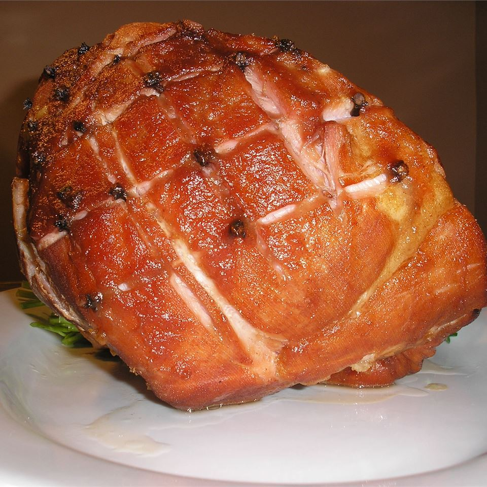

Glazed Ham

Description
A raw ham is slow roasted, then seasoned with a sweet smoky sauce during the last hour to make a memorable meal with little actual work involved
Ingredients
- 1 (8 pound) bone-in shank ham
- 4 cups water, or as needed
- ½ cup honey
- ½ cup brown sugar
- 2 tablespoons liquid smoke flavoring
- 2 tablespoons Worcestershire sauce
- 1 pinch ground cloves